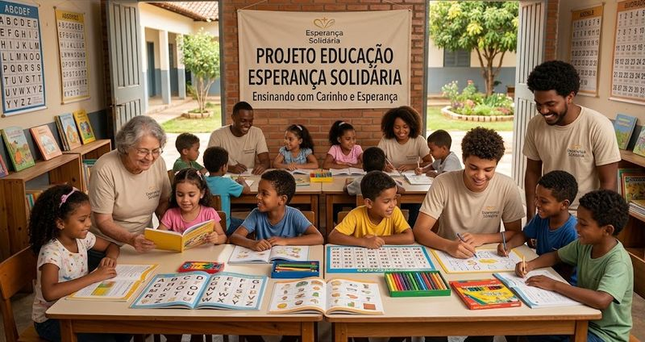
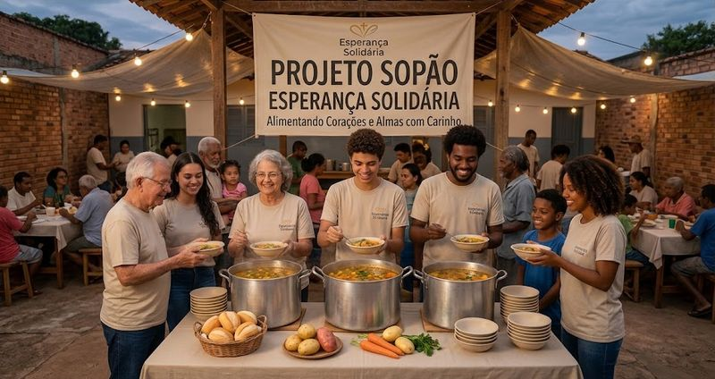

Missão
Promover educação, alimento e cidadania para crianças, jovens e famílias em vulnerabilidade, com transparência.
A Esperança Solidária nasceu em 2012, com um grupo de vizinhos que preparava sopa para as famílias do bairro. Hoje somos uma rede de voluntários, doadores e parceiros que atua em educação e combate à fome.
Promover educação, alimento e cidadania para crianças, jovens e famílias em vulnerabilidade, com transparência.
Ser referência em transformação social, onde nenhuma criança fique sem escola e nenhuma família sem comida.
Empatia, transparência, respeito à diversidade e compromisso com resultados.
Conquistas: Selo Organização Transparente e Prêmio Voluntariado Cidadão (2023).

Reforço escolar e inclusão digital para 200 crianças e adolescentes.
Saiba mais
Refeições e kits de higiene entregues toda semana para famílias carentes.
Saiba maisPresidente e fundadora
Diretor financeiro
Coordenadora de voluntariado
Coordenador de projetos
Estrutura: Assembleia Geral, Diretoria Executiva, Conselho Fiscal e Coordenações (projetos, voluntariado, captação e comunicação).
Endereço: Rua das Acácias, 123 - Centro, São Paulo/SP - CEP 01000-000
Telefone: (11) 3000-0000
E-mail: contato@esperancasolidaria.org.br
Atendimento: segunda a sexta, das 9h às 18h